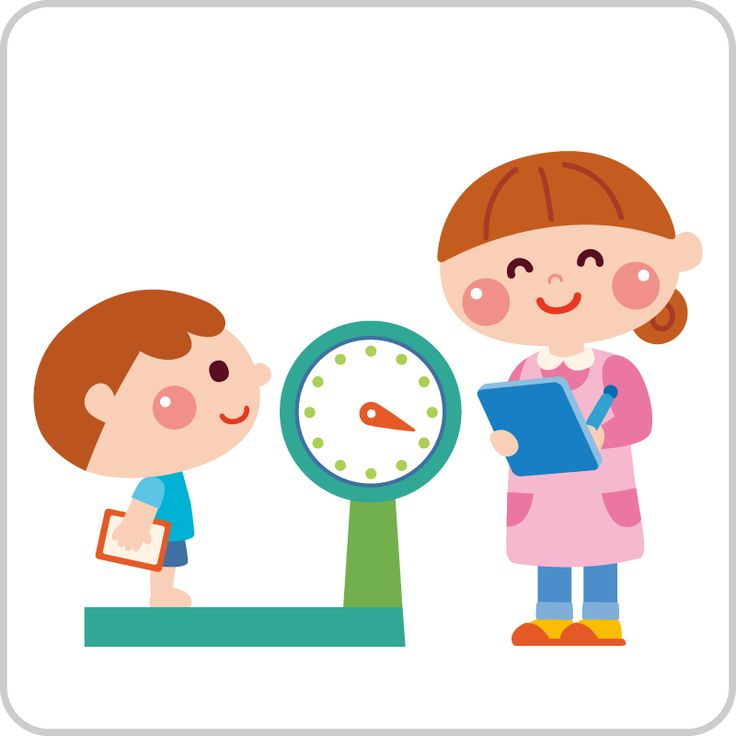
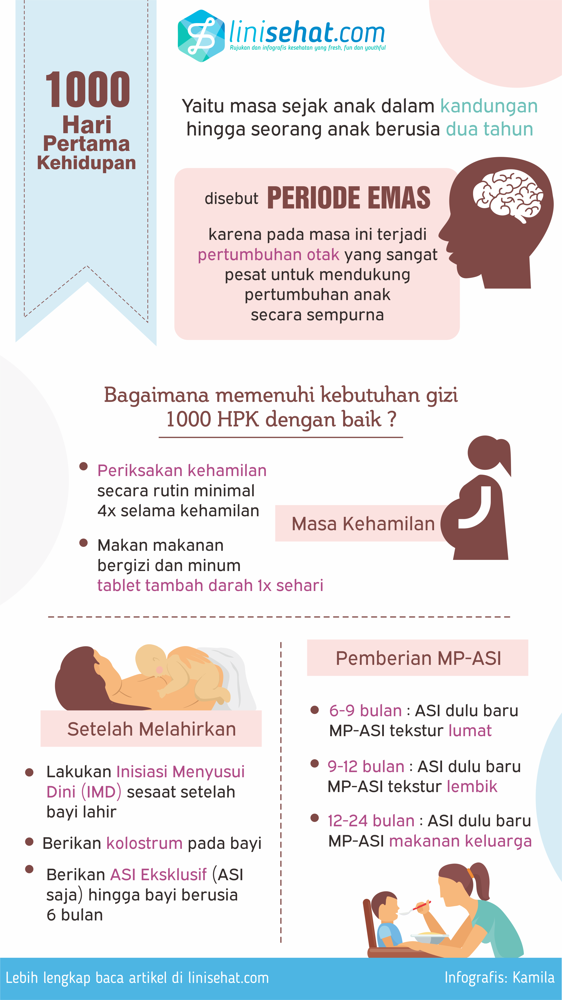
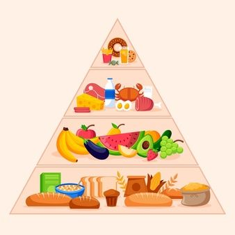
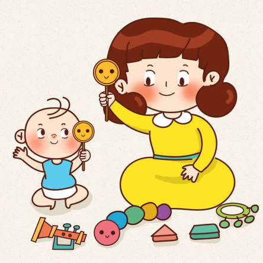

Tumbuh Kembang
Apa Itu Tumbuh Kembang Anak? Pentingkah?

Tumbuh kembang anak adalah proses dinamis yang tidak hanya berkaitan dengan pertumbuhan fisik saja, namun juga mental (kognitif, emosional, sosial) sejak bayi hingga dewasa. Ini akan berpengaruh terhadap kualitas hidup anak di masa depan. Maka proses tumbuh kembang anak sangat penting untuk diperhatikan.
Pentingnya 1000 Hari Pertama Kehidupan
Penting bagi orang tua mengetahui mengenai 1000 hari pertama kehidupan, untuk mendeteksi masalah pertumbuhan pada anak sehingga dapat ditangani lebih awal.
Kenapa 1000 hari pertama kehidupan penting?
Karena pada periode ini, otak anak akan bertumbuh dan berkembang dengan sangat pesat, sehingga masalah terkait kurangnya asupan gizi atau stimulasi akan menyebabkan masalah.

Sumber: linisehat.com
Apa Saja Faktor yang Mempengaruhi Tumbuh Kembang Anak?
A. Faktor Nutrisi
- Gizi: Dibutuhkan asupan nutrisi cukup dan seimbang untuk pertumbuhan dan perkembangan fisik anak.
- ASI: ASI diperlukan untuk meningkatkan sistem kekebalan tubuh bayi.

B. Faktor Lingkungan
- Pola Asuh Orang Tua: Cara merawat dan mendidik anak sangat berpengaruh pada perkembangan emosional dan sosial anak.
- Lingkungan Sekitar: Sanitasi, akses Pendidikan, akses layanan kesehatan, akan berpengaruh pada perkembangan anak.
- Interaksi Sosial: Interaksi teman-teman yang sebaya dan orang dewasa, juga akan membantu perkembangan keterampilan sosial dan emosional anak, namun harus tetap diperhatikan.
C. Faktor Lain
- Stimulasi: Stimulasi yang tepat dapat merangsang perkembangan otak serta keterampilan anak.
- Kesehatan: Kondisi medis tertentu dapat menghambat atau berpengaruh pada tumbuh kembang anak.

Gangguan Terkait Tumbuh Kembang pada Anak yang Harus Diwaspadai
- Gangguan Kognitif: Keterbatasan dalam kemampuan berpikir, belajar, dan memecahkan masalah.
- Gangguan Attention Deficit Hyperactivity Disorder (ADHD): Gangguan neurobiologis yang ditandai dengan kesulitan dalam mempertahankan perhatian, hiperaktivitas, dan impulsivitas.
- Gangguan Spektrum Autisme (ASD): Gangguan perkembangan yang mempengaruhi kemampuan berkomunikasi, berinteraksi sosial, dan melakukan aktivitas tertentu.
- Gangguan Sosial-Emosional: Kesulitan dalam berinteraksi dengan orang lain, mengelola emosi, atau memahami perasaan orang lain.
- Stunting: Kondisi yang disebabkan oleh kekurangan gizi kronis dan berdampak pada pertumbuhan fisik anak, seperti tinggi badan kurang atau tidak sesuai dengan usia anak.